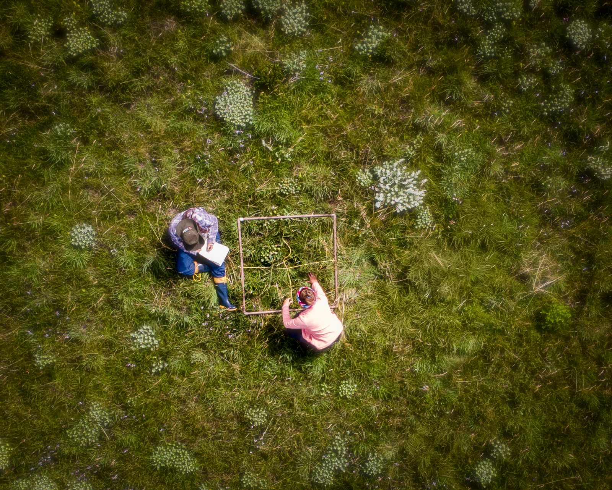
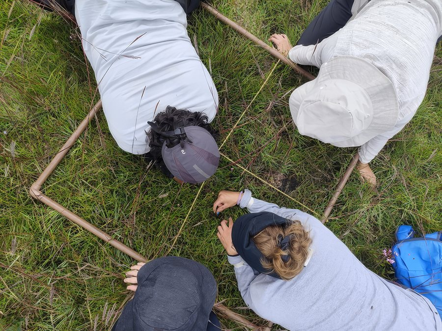

Guia dos Campos
Botânico de Altitude
O PELD-BISC é um grupo de Pesquisa Ecológica de Longa Duração (PELD) que reúne pesquisadores da UFSC, UDESC, Epagri e ICMBio. Ele faz parte do INCT ClimaVeg, Instituto Nacional de Ciência e Tecnologia dedicado a estudos sobre biodiversidade, ecologia e mudanças climáticas, com ênfase na adaptação da vegetação nativa, financiado pelo CNPq (governo federal).
Aqui, estudamos como as mudanças ambientais e os distúrbios afetam a biodiversidade e o funcionamento dos ecossistemas de Santa Catarina ao longo do tempo. Nossas pesquisas têm cinco objetivos principais:

Os estudos acontecem em duas unidades de conservação, o Parque Nacional de São Joaquim e o Parque Estadual da Serra Furada. Juntas, elas somam mais de 50 mil hectares de Floresta Ombrófila Densa, Floresta com Araucária, Matas Nebulares e Campos de Altitude do estado.
Ver todas as notícias do PELD-BISC →
O Guia dos Campos foi elaborado a partir de um trabalho minucioso de identificação botânica e de registros fotográficos feitos ao longo de cinco anos de levantamentos da vegetação dos campos de altitude, tanto nos blocos experimentais do PELD-BISC quanto em outras áreas do Parque Nacional de São Joaquim (PNSJ). A primeira versão do guia foi publicada em PDF. Agora, ampliamos o trabalho com este site, que torna a consulta mais dinâmica e abre espaço para a colaboração de quem também estuda e admira os campos.
Esperamos que o site contribua para a divulgação e valorização da diversidade campestre, e que seja útil para pesquisas, ensino e ações de conservação!

peldbisc Fogo no Parque Nacional de São Joaquim (PNSJ)?!
Calma, pode ficar tranquilo que isso faz parte de uma das pesquisas do PELD-BISC
O manejo controlado do fogo é essencial para o equilíbrio do ecossistema e da biodiversidade, pois assim é possível administrar a quantidade de matéria seca orgânica acumulada no solo.
Pense assim: quanto maior for essa quantidade, mais fácil fica para o fogo se espalhar e atingir outros lugares como as florestas com araucárias, matas nebulares e até casas.
Por esse motivo, utilizando as técnicas de manejo tradicional dos campos que há séculos são feitas pelos proprietários rurais, os pesquisadores do PELD-BISC estão trabalhando para comprovar cientificamente que o manejo do fogo é essencial para o Parque Nacional de São Joaquim.
Ah! Mas é super importante reforçar que o fogo bom é aquele controlado e colocado no lugar e época corretos e, claro, com autorização do órgão competente.